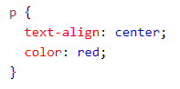
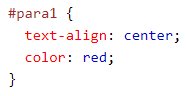
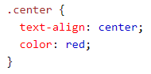

CSS Selectors locate or select HTLM elements that the individual wants to use for a style.
There are 5 different CSS Selectors:
Simple Selectors
Combinator Selectors
Pseudo-Class Selectors
Pseudo-Elements Selectors
Attribute Selectors
With Simple Selectors, you select the elements based on either name, id or class. The CSS element selector selects elements based on the name of the element which is how it locates it and applies the style that the individual desires. Here is a code snippet as an example of how it is used:
As you can see, when the element p is used, it will have a red text colour and be center-aligned.
You can also select elements based on id which uses the id attribute. In order to select an element with a specifc id, you must include a hashtag and follow with the id of the element. Here is an example:
As you can see, the element which uses the id para1 will apply a red colour text and be center-aligned.
You can also select elements based on class by using the class attribute. In order to select an element with a specific class, you must use a fullstop or period (.) and follow with the class name. Here is an example:
As you can see, the element which uses the class center will apply a red colour text and be center-aligned.